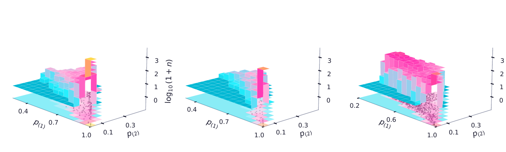

Finding 01
The model withdraws certainty rather than misplacing it
Across the three benchmarks accuracy falls from 96.94% to 54.70%. Over the same range, the fraction of items on which the model commits fully, placing probability 1 on a single option, falls from 53.4% to 5.2%. On the hardest benchmark it commits about once in twenty items.
Accuracy on those committed items barely moves: 100.00%, then 99.79%, then 99.06%. This is the failure mode the result excludes. A component whose confidence stays high while its accuracy falls is worse than useless in a routing system, because it fails silently and at scale.
